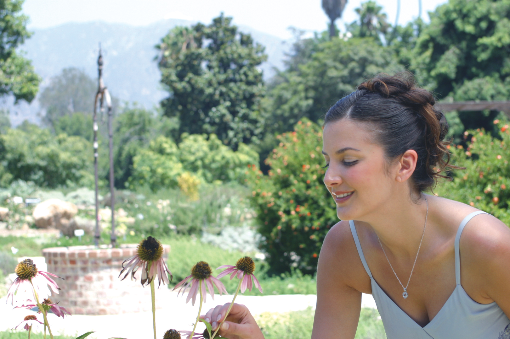

Виды светофильтров
Если покупаешь дорогой объектив - обязательно прихвати с собой и светофильтр. "Зачем?" - спросите вы, а все очень просто! Светофильтр выполняет защитную функцию для объектива. Если вдруг вы случайно уроните объектив, или кто-то заденет линзу обхектива, то вам не о чем волноваться. Светофильтр возьмет все удары на себя и линза вашего объектива останется невредимой. (Ну если вы конечно не собираетесь кидать его с высоты 2-3 метров:))
А какие виды светофильтров существуют? С помощью светофильтров можно добиться различных эффектов при съемке. Рассмотрим какие виды светофильтров бывают:
- UV Ультрафиолетовый фильтр
- SkyLight
- PL Поляризационный фильтр
- ND Нейтральный фильтр
- Градиентный фильтр
- Звездный фильтр
- Close-Up
Защита объектива, отражение ультрафиолетового излучения
Ультрафиолетовое излучение не видимо человеческому глазу. Но матрица фотоаппарата более чувствительна, и реагирует на ультрафиолет. Конечно, не всегда его влияние заметно: оно зависит места и условий съемки. Из-за ультрафиолетового излучения фотография теряет резкость и глубину. Это связано с тем, что объективы фотоаппаратов не фокусируют изображение, созданное ультрафиолетовыми лучами. В результате на снимке получается размытая пелена. Особенно заметно теряется качество изображения при съемке длиннофокусным объективом и светосильным с открытой диафрагмой. Ультрафиолетовый фильтр не пропускает ультрафиолетовое излучение, при этом полностью пропуская все остальные лучи. Фильтр бесцветен и имеет кратность, близкую к 1, то есть не оставляет никаких побочных эффектов изображении. Благодаря этому его очень часто, а в наше время даже преимущественно, используют в качестве защитного фильтра, оберегающего объектив от отражений, повреждений, отпечатков пальцев, грязи и воды.
| С использованием UV-фильтра: | Без фильтра: |
Коррекция температуры цвета, защита объектива
Фильтр SkyLight, так же как UV, не пропускает ультрафиолетовое излучение и служит для защиты объектива. Но есть у него и дополнительное свойство – цветокоррекция света. Дело в том, что при ясном небе свет имеет сильную цветовую насыщенность, и освещенные им участки изображения приобретают неприятный голубоватый либо просто холодный оттенок. Возможно, вы замечали, что часто при дневной съемке кожа даже загорелых людей выглядит бледной. Фильтр SkyLight имеет незначительную розовую окраску, компенсирующую холодные тона от неба. Таким образом цветопередача становится теплее и получается более живой и естественной.
| С использованием SkyLigh: | Без фильтра: |
|  |
Удаление отражений, дымки и бликов, насыщенные цвета
Поляризационный фильтр – незаменимый помощник современного фотографа, позволяющий получить яркие и выразительные фотографии. Фильтр устраняет свет, отраженный от неметаллических поверхностей, – такого эффекта невозможно добиться в Photoshop, поскольку программа не может разобраться, где на фотографии отражение и что на его месте должно было быть.
| С использованием поляризационного фильтра: | Без фильтра: |
Съемка с открытой диафрагмой и долгой выдержкой
Нейтральный фильтр понижает экспозицию на несколько стопов. В обычных случаях при сильном освещении затемнить кадр можно либо прикрыв диафрагму, либо уменьшив выдержку. Но иногда не подходит ни один из этих вариантов. Например, если вы снимаете реку, водопад или фонтан днем, то при короткой выдержке будут видны блики на воде, рябь или четко прорисованные струи, что не очень красиво так как не передает "текучести". А если вы закроете диафрагму, то изображение станет резким и потеряет пространственную глубину. В таких случаях и используют данный фильтр
| С использованием нейтрального фильтра: | Без фильтра: |
Затемненная часть кадра для выравнивания экспозиции
Часто на фотографиях пейзажей небо получается очень светлым, а рельеф – темным. Это связано с тем, что фотоаппарат может правильно передать контраст, только если разница между темной и светлой частями изображения не превышает 4 шага экспозиции. На практике же эта разница очень часто оказывается больше, на рассвете и на закате достигает 7 шагов. Чтобы сделать красивый снимок, нужен градиентный фильтр. Половина такого фильтра – просто прозрачное стекло, вторая половина – нейтральный фильтр. Темная часть поворачивается так, чтобы затемнить небо, и изображение получается равномерным и гармоничным. Бывают также цветные градиентные фильтры, у которых «темная половина» представляет собой не нейтральный фильтр, а цветной.
| С использованием градиентного фильтра: | Без фильтра: |
Дополнительные возможности для творчества
Как создать или передать атмосферу праздника в фотографии? Наиболее практичный ответ на этот вопрос - использовать звездный фильтр. Этот фильтр превращает источники света и их яркие отражения в сверкающие звезды. Звездным фильтром любят пользоваться свадебные фотографы - он существенно упрощает дальнейщую обработку фотографий в фотошопе. Используют фильтр для съемки ювелирных изделий, хрусталя - везде, где нужны сияние и блеск. Также со звездным фильтром часто делают ночные пейзажы: фильтр превращает обычную прогулку по городу в сказочную феерию.
| С использованием звездного фильтра: | Без фильтра: |
Макросъемка - сокращение минимальной дистанции фокусировки
Если вы захотели снимать макро, не обязательно покупать для этого специальный объектив. Особенно если у вас уже есть любимый светосильный фикс. Достаточно купить для него специальный фильтр, сокращающий минимальное расстояние фокусировки. Выпускаются фильтры Close-Up, дающие +1, +2, +3 и +4 диопртрии увеличения. А совмещая несколько фильтров одновременно, дистанцию фокусировки можно плавно регулировать.
| С использованием Close-Up: | Без фильтра: |
 |